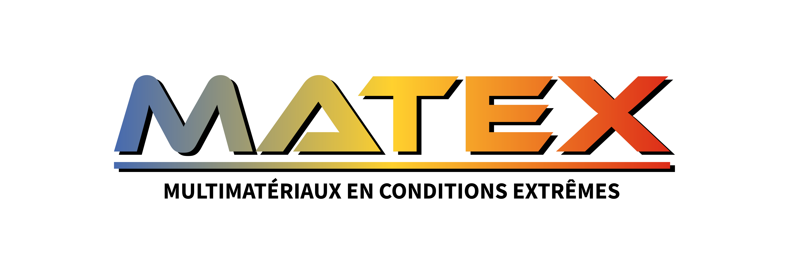
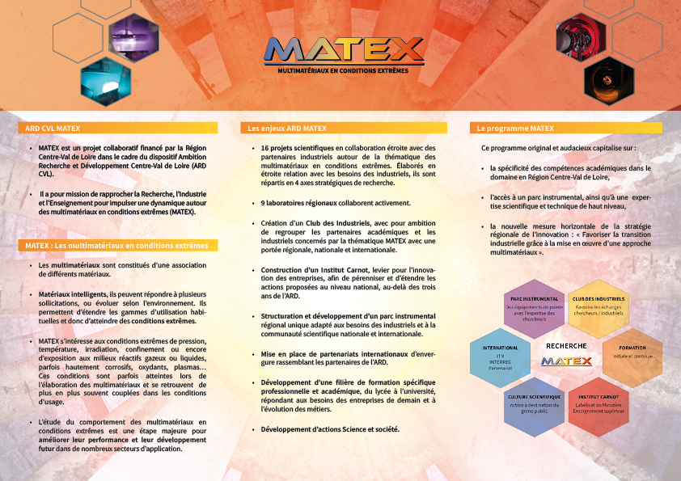
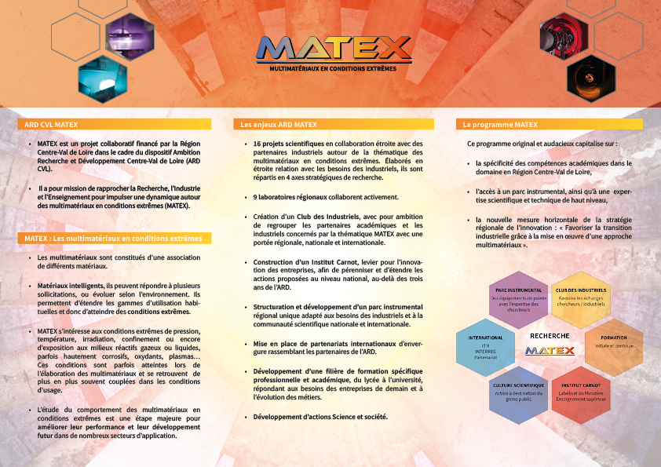

< Stage CNRS />
Ce stage de fin de DUT constitue ma première expérience professionnelle dans le domaine de la communication.
La diversité des missions qui m’ont été confiées a mis en exergue les compétences polyvalentes de ma formation de DUT MMI. Cette immersion de douze semaines a été très enrichissante car j’ai pu lancer le projet MATEX en autonomie sans être retenu par des contraintes graphiques ou éditoriales.
Création de la charte graphique et du logo

Création d'un roll up
Création d'un dépliant
 
